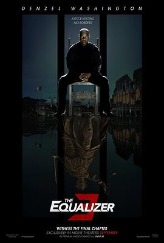

7.3
伸冤人3
The Equalizer 3
2023
美国
评分 7.3
导演:
安东尼·福奎阿 (Antoine Fuqua)
演员:
丹泽尔·华盛顿 / 达科塔·范宁 / 欧吉尼奥·马斯特兰德雷亚 / 大卫·丹曼 / 盖亚·斯考达里奥
类型:
动作,惊悚,犯罪
剧情简介
在意大利南部一个古朴的沿海小镇，前情报官兼退役特工罗伯特·麦考尔远离过去的血雨腥风，试图享受平静生活。然而，当他的新朋友们被当地黑帮“卡莫拉”组织威胁、勒索、恐吓时，这位外表沉稳、内心炽热的男子再也无法置身事外。麦考尔发现，小镇居民日夜受压：夜半爆炸激起街巷惊叫，熟悉的咖啡馆外留下焦黑痕迹，渔夫的鱼摊被焚毁，警员乔·博努奇因调查被围攻。每一个场景都像一记警钟，催促麦考尔重拾旧日使命。他穿行于窄巷石阶、黄昏海岸、粉墙小屋之间，看见母亲紧抱孩子哭泣，看见老人无奈签下“离开家园”的纸张。当麦考尔接过那通来自中央情报局女探员艾玛·柯林斯的匿名电话，他知道，是时候出手。他静静地伏击、迅速地行动，白天如普通游客般在小镇漫步，夜晚却在黑暗中精准捣毁罪恶链条。枪声、海浪、橄榄林，一切仿佛在为正义配乐。就在那场屋顶追逐、酒庄突袭之后，麦考尔站在一片废墟前，却看见一个社区紧握手机，共同记录他的身影。他明白，这不仅是个人的战斗，而是小镇人民的觉醒。影片在血腥与救赎之间游走：既有冷静如雨的报复，也有暖阳下的互助与团结。麦考尔不只是一个复仇者，更是一个守护者，他不再只是路过，而是在这一方天地留下誓言：当黑暗压迫，光明必将耀眼。他肩扛正义，拾起了老兵的责任，也开启了平凡人的新希望。